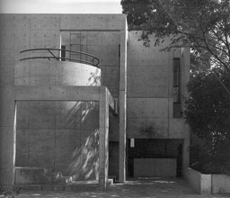

|
Seijo House In-Between, Setagaya, Tokyo, Japan, 1987-1988 GA
Houses
|
The Seijo House faces a heavily trafficked street. It is situated between two other houses designed by the same architect 5 years earlier as can be seen on the plan on the left. Then, he didn't knew he had to built another house in the middle. The three houses together have a frontage of 30 metres. The major problem of the design was to let the house mediate between the other two unconnected houses and to create a continuous form facing the street. The front of the other two houses consists of different layers of walls with openings positioned at different places. In that way the architect has tried to reduce noise, introduce light and air and to prevent visual intrusion from the street. Because of the undefined compositions the architect was able to give the house in the middle a strong form and a continuous facade as can be seen on the photograph on the left.
|
|